.ph-label de Auth.tsx (línea 108). Está pensada como indicador del área de cover photo pero resulta confusa para usuarios nuevos — parece un botón o badge sin función aparente.
opacity: 0.5 o un color de fondo explícito para el estado disabled en dark mode.
Grabaciones del navegador durante la revisión. Los videos cubren: welcome → register → volver → login.
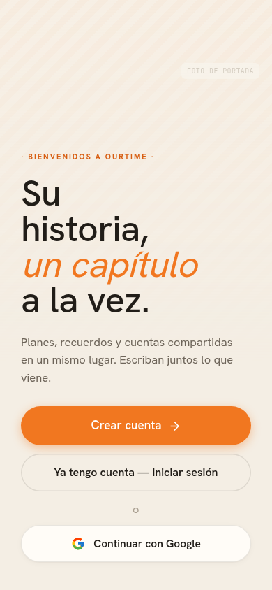
01 · Welcome
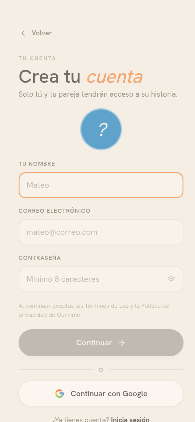
02 · Register form
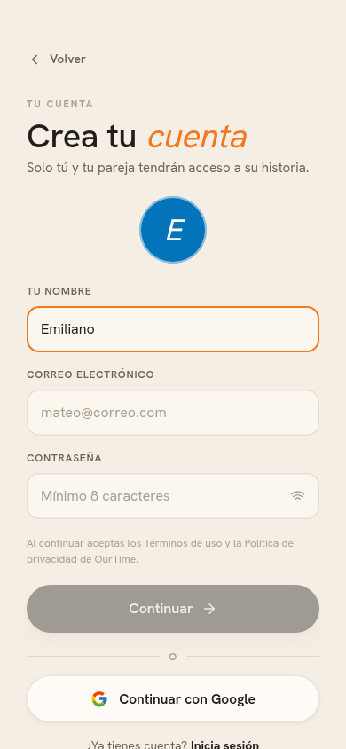
03 · Register (nombre)
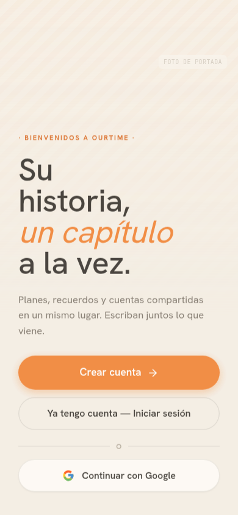
04 · Back a Welcome
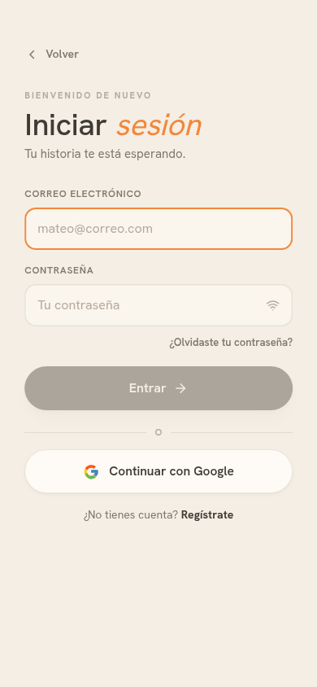
05 · Login
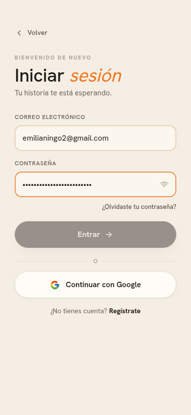
06 · Login (filled)
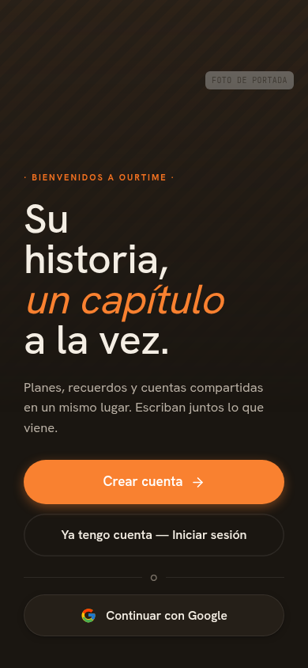
01 · Welcome
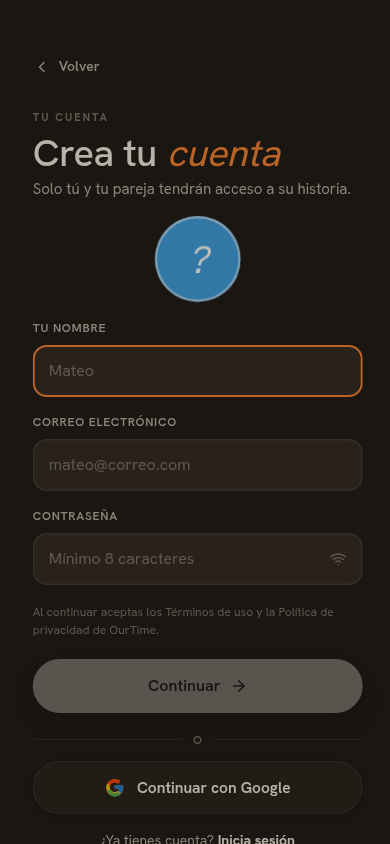
02 · Register form
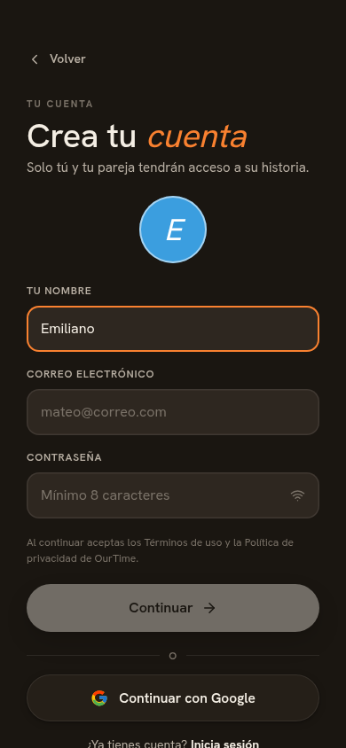
03 · Register (nombre)
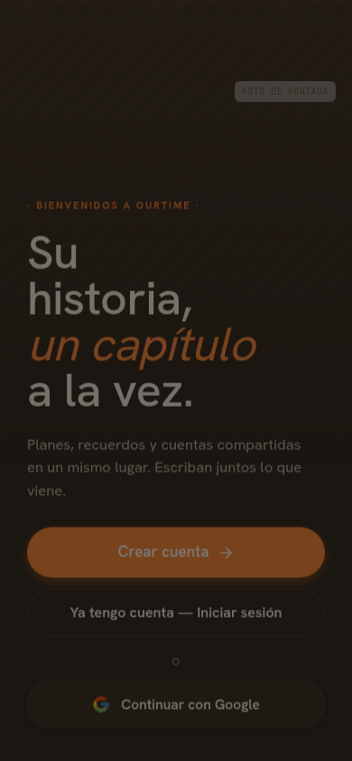
04 · Back a Welcome
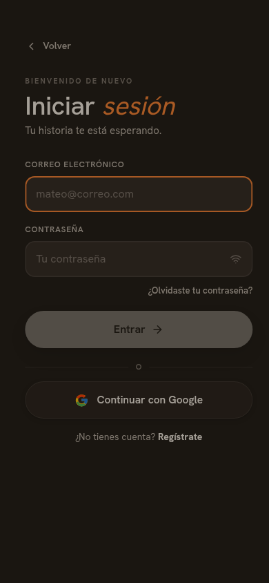
05 · Login
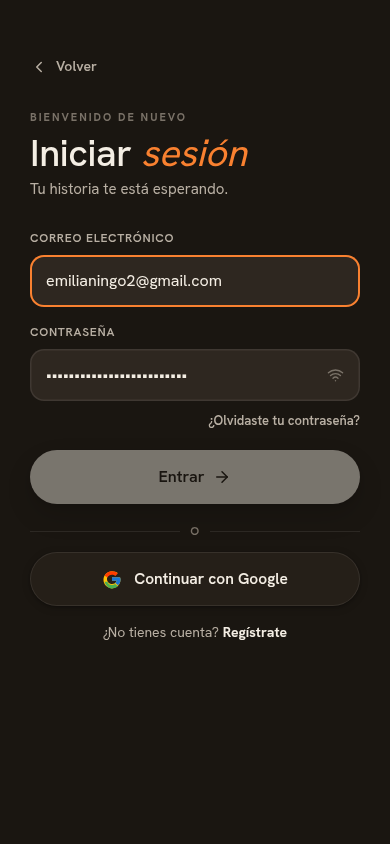
06 · Login (filled)
Las pantallas dentro del app (Dashboard, Agenda, Recuerdos, etc.) requieren login activo para ser capturadas. Las mejoras de esta sesión — nombre de la historia en Dashboard, pill del switcher junto a la campana, portadas en StorySwitcher, añadir fotos a álbumes — no pudieron validarse visualmente sin credenciales de prueba. Se recomienda añadir un usuario seed o una sesión de prueba para futuros reviews automatizados.